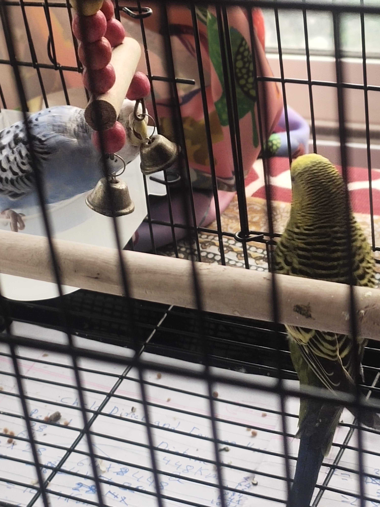

Bird Talks
This Website is about birds
budgies are small parrots which hunted in very large quantity.
Budgies Barn Owl
Barn Owl
- Barn owl
- Hen harrier
- Yellowhammer
- Curlew
Some of birds that are protected in Ireland:-
Threats to birds
- Pollution
- Climate change
- Habitat destruction
